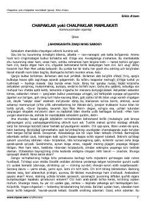

CYSotsialistik tuzumning o'ziga xos qiyofasini ochib beruvchi kinoyali qissa.
Ushbu qissa sotsialistik tuzumning o'ziga xos qiyofasini kinoya va badiiy tasvirlar orqali ochib beradi. Asar muallifning xorijiy safar taassurotlari va o'sha davr siyosiy muhitiga bo'lgan qarashlarini o'zida mujassam etgan.